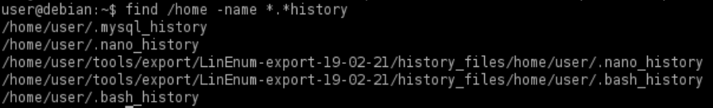
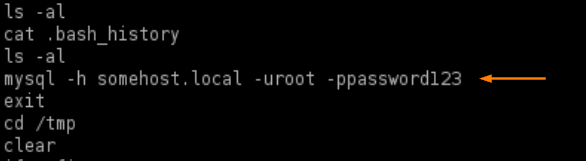

History Files
• History files record commands issued by users while they are using certain programs.
• If a user types a password as part of a command, this password may get stored in a history file.
• It is always a good idea to try switching to the root user with a discovered password.
0. Search for history files
target@debian:~$ find / -name *.*history -ls 2>/dev/null

1. View the contents of hidden files in the user’s home directory with filenames ending in “history”:
target@debian:~$ cat ~/.*history | less #for a tilde ~ on Linux press AltGr + ì

2. Use the su command to switch to the root user account, using the password found in the history file.
Could be that the password is been reused for the root account
target@debian:~$ su root